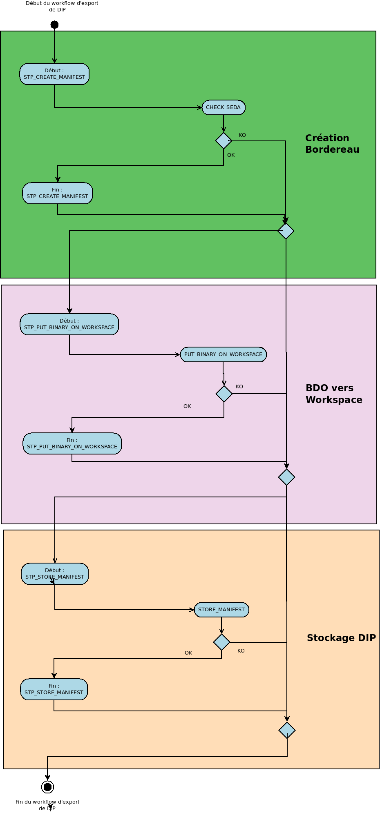

Workflow d’export d’un DIP¶
Introduction¶
Cette section décrit le processus (workflow) d’export, utilisé lors de l’export d’un Dissemination Information Package (DIP) dans la solution logicielle Vitam.
Toutes les étapes et actions sont journalisées dans le journal des opérations. Les étapes et actions associées ci-dessous décrivent le processus d’export de DIP (clé et description de la clé associée dans le journal des opérations) tel qu’implémenté dans la version actuelle de la solution logicielle Vitam.
Processus de création du bordereau de mise à disposition (STP_CREATE_MANIFEST)¶
Création du Bordereau CREATE_MANIFEST (CreateManifest.java)¶
- Règle : Création d’un bordereau contenant les unités archivistiques soumises au service d’export de DIP, ainsi que le groupes d’objets techniques et objets-données qui leurs sont associés
- Type : bloquant
- Statuts :
- OK : le bordereau contenant les descriptions des unités archivistiques, groupes d’objets techniques et objets-données a été créé avec succès (CREATE_MANIFEST.OK=Succès de la création du bordereau de mise à disposition)
- KO : la création du bordereau contenant les descriptions des unités archivistiques, groupes d’objets techniques et objets-données a échouée car des informations étaient manquantes, érronées ou inconnues (CREATE_MANIFEST.KO=Échec de la création du bordereau de mise à disposition)
- FATAL : une erreur fatale est survenue lors de la création du bordereau (CREATE_MANIFEST.FATAL=Erreur fatale lors de la création du bordereau de mise à disposition)
Processus de déplacement des objets binaires vers le workspace (STP_PUT_BINARY_ON_WORKSPACE)¶
Déplacement des objets binaires vers le workspace PUT_BINARY_ON_WORKSPACE (PutBinaryOnWorkspace.java)¶
- Règle : Déplacement des objets-données mentionnées dans le bordereau vers le workspace
- Type : bloquant
- Statuts :
- OK : les objets-données ont été déplacés vers le workspace avec succès (PUT_BINARY_ON_WORKSPACE.OK=Succès du déplacement des objets binaires de l’offre de stockage vers le workspace)
- KO : le déplacement des objet-données vers le workspace a échoué car un ou plusieurs de ces objets étaient introuvables (PUT_BINARY_ON_WORKSPACE.KO=Échec du déplacement des objets binaires de l’offre de stockage vers le workspace)
- FATAL : une erreur fatale est survenue lors du déplacement des objets binaires de stockage vers le workspace (PUT_BINARY_ON_WORKSPACE.FATAL=Erreur fatale lors du déplacement des objets binaires de l’offre de stockage vers le workspace)
Processus de création du DIP et de son déplacement vers l’offre de stockage (STP_STORE_MANIFEST)¶
Stockage du bordereau compressé (STORE_MANIFEST - StoreDIP.java)¶
- Règle : Création du DIP et de son déplacement vers l’offre de stockage
- Type : bloquant
- Statuts :
- OK : le DIP a été créé et stocké sur les offres de stockages avec succès (STORE_MANIFEST.OK=Succès du processus de la création du DIP et de son déplacement vers l’offre de stockage)
- FATAL : une erreur fatale est survenue lors de la création et de l’enregistrement du DIP sur les offres de stockage déplacement des objets binaires de stockage vers workspace (STORE_MANIFEST.FATAL=Erreur fatale lors de la création du DIP et de son déplacement vers l’offre de stockage)
Structure du Workflow d’export de DIP¶
Le workflow d’export de DIP actuel mis en place dans la solution logicielle Vitam est défini dans l’unique fichier “ExportUnitWorkflow.json”. Ce fichier est disponible dans /sources/processing/processing-management/src/main/resources/workflows.
D’une façon synthétique, le workflow est décrit de cette façon :
